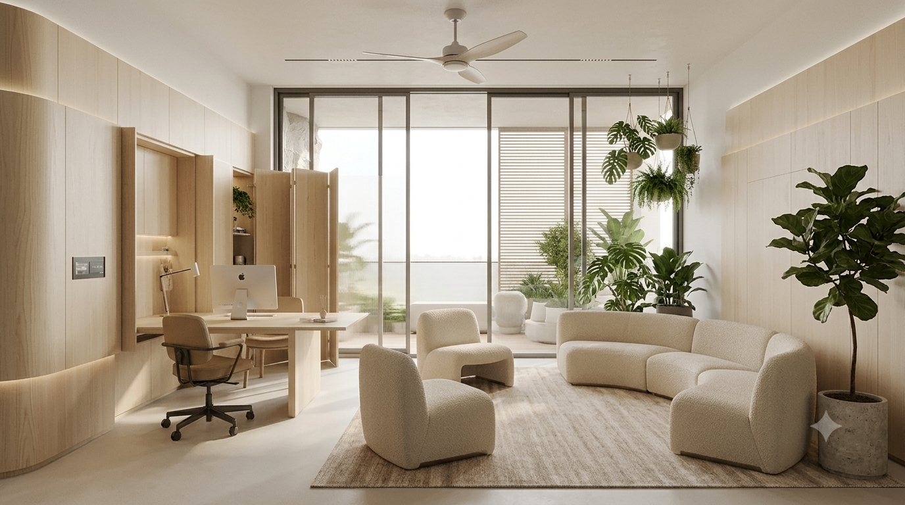
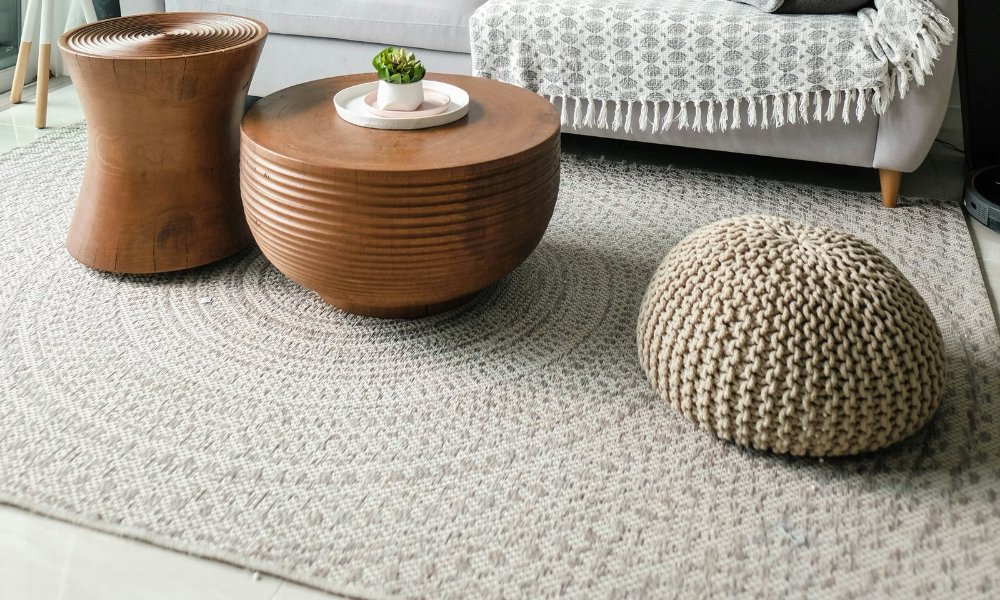
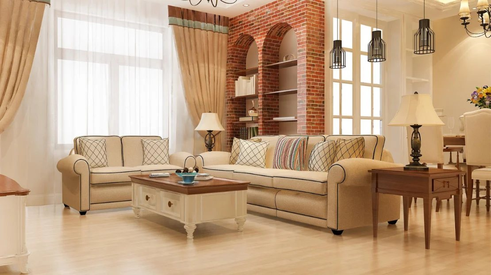

NA
Nur Aishah Rahman
Founder & Principal Designer
Trained in architecture, Aishah founded RUANG in 2011. She leads every concept presentation and still sketches every plan by hand.
RUANG is a Kuala Lumpur interior atelier of designers, makers and project managers. Since 2011 we have designed family homes, restored heritage houses and fitted out small hospitality spaces across Malaysia.

RUANG began with a simple question: why do so many beautiful rooms feel as though nobody lives in them?
In 2011, Nur Aishah Rahman left a large architecture practice in Kuala Lumpur and rented a narrow shophouse in Bangsar with one draughtsman, one carpenter and a borrowed drawing table. Her first commission came from a neighbour — a young family who wanted their terrace house to feel less like a showroom and more like theirs. It took eight months, three rewrites of the floor plan and a great deal of tea. When the family moved in, they told her it was the first time the house had felt quiet.
That word — quiet — became our compass. Not minimal, not empty, but resolved: a room in which every object has a reason to be there, every material is allowed to age gracefully and nothing is shouting for attention.
The name came shortly after. Ruang is the Malay word for space, but it also means room, clearance and the gap between things — the place where life actually happens. It is the part of a home that cannot be bought off a shelf, and it is what we spend most of our time shaping.
A good room is not decorated. It is edited, patiently, until only the right things remain.


Through the 2010s the studio grew the way a good house does: one room at a time. In 2014 we took on our first heritage commission, a 1920s shophouse in Ipoh, and discovered that restoration demanded a different kind of humility — you are not the author, only the latest custodian. That project taught us to read old joinery, to respect the hand of earlier carpenters and to recognise when the best intervention is none at all.
In 2016 we opened our own workshop in Shah Alam so that cabinets, panelling and furniture could be drawn and built under one roof. It changed everything. Details that once depended on a supplier’s catalogue could now be tuned to the millimetre, and the people who drew the design could stand beside the people making it.
Today RUANG is a team of twenty-eight — interior designers, architects, joiners, lighting specialists, stylists and project managers — but the working method has not changed. We still start by sitting in your home. We still draw by hand before we draw on screen. And we still believe that the measure of our work is not how it photographs on the day of handover, but how it feels ten years later, on an ordinary Tuesday evening, to the people who live there.
The beliefs we return to on every project, large or small.
The best brief is rarely written down. We observe how you cook, where you read, who sits where at dinner, and let that — not a trend — shape the plan.
Heat, humidity and monsoon rain are not problems to be air-conditioned away. We start with orientation, shade, cross-ventilation and materials that thrive in our climate, and add machinery last.
Where possible, we draw it and build it ourselves. Bespoke pieces fit better, last longer and carry the quiet signature of the hands that made them.
Solid timber, real stone, brass, linen, rattan, clay. Materials that show their grain and wear gracefully — and never pretend to be something they are not.
A home is not a photograph. We design for children, guests, pets, monsoon afternoons and festive open houses — for the life that happens after the camera leaves.
Reclaimed hardwood, dense and golden-brown, for floors and structure.
A warm, fine-grained timber ideal for joinery and furniture.
Quiet creams and dramatic dark veins for walls, floors and tops.
Hand-woven and breathable, a tropical classic made contemporary.
Softly aging metal for edges, fittings and the glint of light.
Natural, textured and washable, for drapery and upholstery.
We visit your home or site, study the architecture and light, and listen carefully to how you live. You receive a written brief and a clear fee proposal.
Weeks 1–2Space plans, moodboards and a first materials palette. We present the idea in sketches and samples, then refine it with you until it feels right.
Weeks 3–6Detailed drawings, lighting plans, joinery details and schedules. Every decision is costed so there are no surprises later.
Weeks 7–14We order, commission and build — from stone and fabric to bespoke cabinetry in our own workshop — and quality-check each piece before it ships.
Weeks 15–30Our project managers run the site daily, coordinating trades, protecting your home and keeping you informed with weekly progress reports.
Weeks 31–44We style the finished rooms, walk you through every detail and remain on call. A twelve-month review visit is included in every project.
OngoingRUANG opens with three people, one drawing table and a single terrace-house commission.
A 1920s shophouse in Ipoh teaches us the discipline of restoration and sets the course for our heritage practice.
We bring joinery in-house, drawing and building bespoke furniture under one roof.
A dedicated team for courtyards, water features and planting begins work on tropical, naturally cooled homes.
The studio crosses twenty people and takes its first projects outside the Klang Valley, from Perak to Penang.
Our most ambitious residence to date is completed, and the studio moves into a larger home in Bangsar Baru.
Trained in architecture, Aishah founded RUANG in 2011. She leads every concept presentation and still sketches every plan by hand.
Daniel oversees our residential portfolio and leads the lighting and materials studio, with a passion for restraint and proportion.
Priya runs our Shah Alam workshop and our network of stone, textile and timber suppliers across Southeast Asia.
Haziq and his team keep every site on schedule and on budget, and are the calm voice at the other end of the phone.
The most sustainable interior is the one that never needs replacing. We design with that in mind, and hold ourselves to a few simple rules.


A first meeting is always complimentary. Bring a sketch, a mood, a feeling — or nothing at all.
Your enquiry is on its way. A member of our design team will be in touch within two working days to arrange a first meeting.